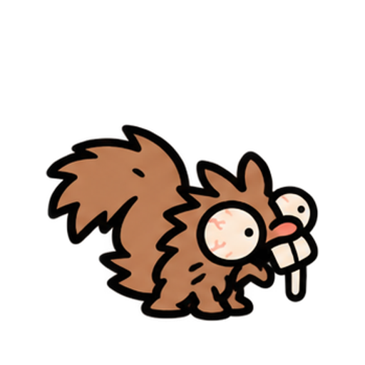
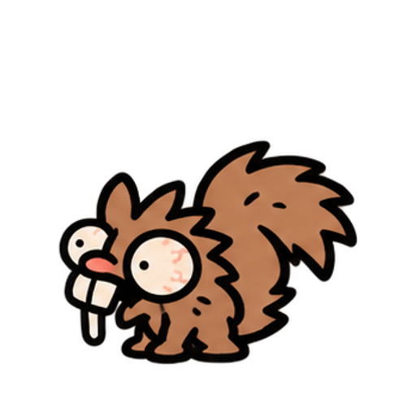
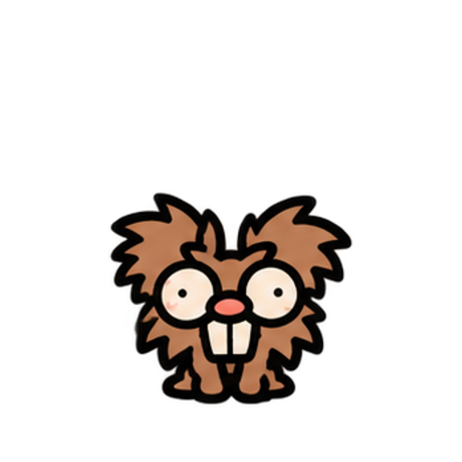
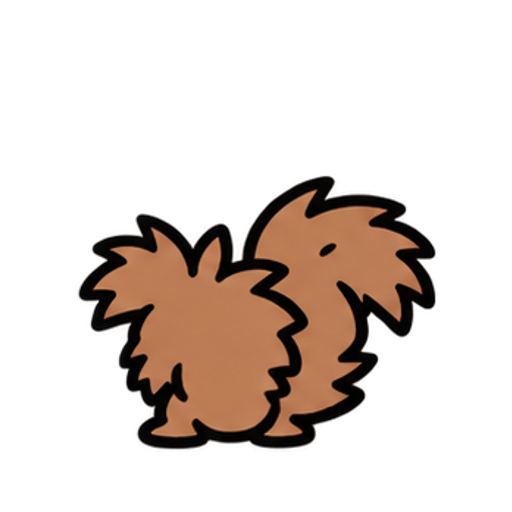

← JogarEsquilo Histérico
Inimigo fraco e móvel. 12 de vida · Nozada: 3 de dano, alcance 3 · corre até 3 casas por turno. Primeiro encontro com três esquilos, seguido por Rosnaldo.
Direita
Esquerda
Frente
Costas
Pranchas originais preservadas. Nozada solta a noz em 50% e causa dano em 78% da ação. Derrota segura o último quadro.